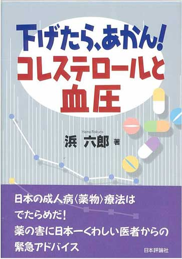
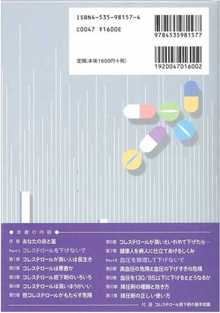
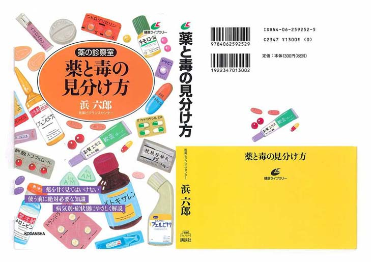

|  |  |
コレステロールと血圧。まるで健康の最大の敵であるかのようにいわれています。
この常識は徹底的に「見直さんとあかん」という思いで、この本を書きました。
こんな刺激的な言葉をあえて使いました（以上「まえがき」より抜粋）。
『薬のチェックは命のチェック』では、いつも「薬にたよらない丈夫な体作りが薬害にあわないための究極の方法」であることを説いてきました。
丈夫な体作りに大切なコレステロール。そのコレステロールを下げすぎる危険性は80年代から機会あるごとに書いてきました。マスメディアの反応はいまひとつでしたが、コレステロール値が高めが最も長生きとの日本のデータを発見し、TIP誌（「正しい治療と薬の情報」）で詳しく報告した1999年が転機となりました。メディアで取り上げられはじめ、それまで売上高が上昇の一途であったコレステロール低下剤の売り上げが低下し始めました。『薬のチェックは命のチェック』第２号（2001年4月）で特集してからさらに関心は高まり、昨年から今年にかけて大手の新聞や週刊誌でも取り上げるまでになり、成果が現われ始めました。
一方、血圧は「下げたらあかん」なんて、常識ではまだ「とんでもない」ことでしょう。私自身、以前はそうでしたが、日本高血圧学会の治療ガイドラインが2000年に改訂されてから、「そんなに下げたらあかん」と思うようになり、つい最近、もっと深刻なデータを再発見し、もっともっと高くても「下げたらあかん」となりました。
どういうことなのか、それは本文をじっくり見ていただきたいと思います。
なお、朝日新聞に連載していた「薬の診察室」に大幅に加筆した「薬と毒の見分け方」を3月15日に講談社から出しましたので、これもあわせてお読みください。
|  |